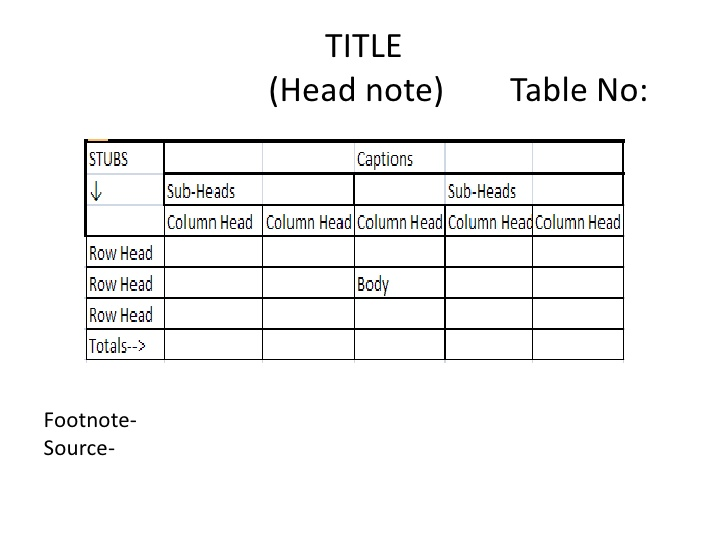
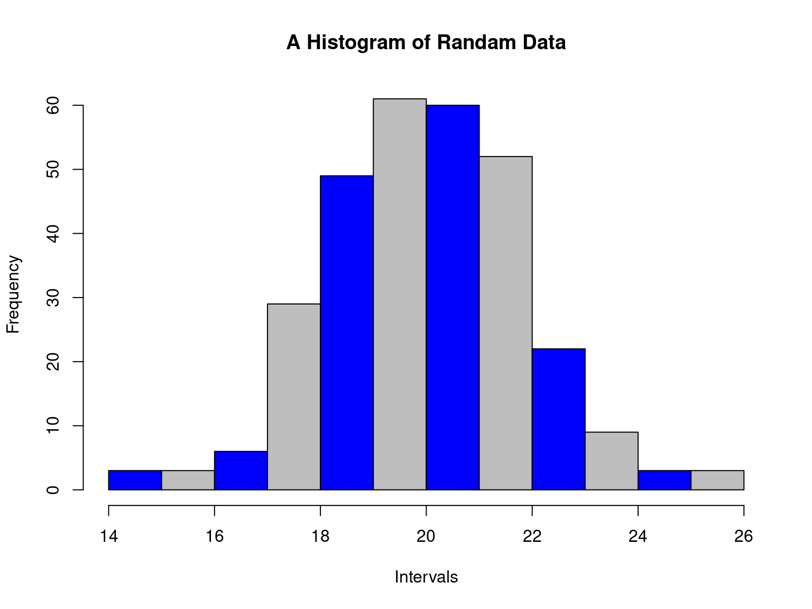
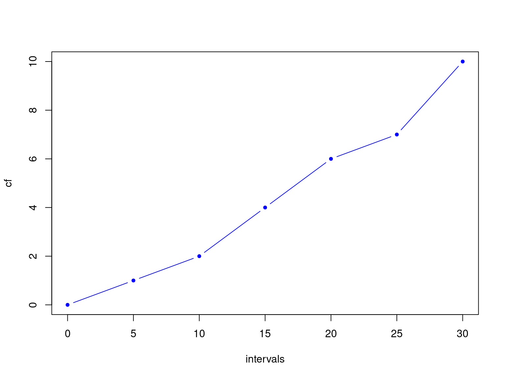
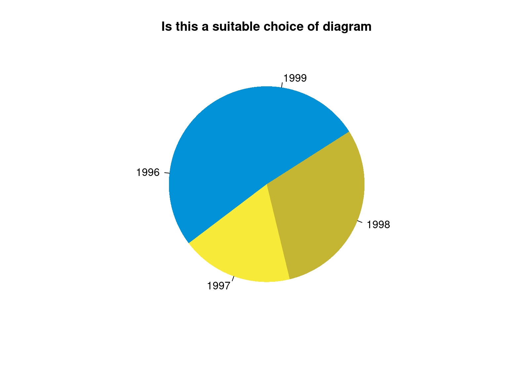

| Abdullah Al Mahmud | www.statmania.info |
Primary: Obtained directly (not collected from someone else)

Geographical
| Country | Bangladesh | USA |
|---|---|---|
| GDP(m) | 120 | 500 |
Chronological (Time series data)
| Year | 2015 | 2016 |
|---|---|---|
| GDP(m) | 120 | 500 |
Quantitative Classification
| Income level | 40,000-50,000 | 50,000-1,00,000 |
|---|---|---|
| Frequency | 120 | 34 |
No. of classes

Can these intervals be readily used?
(5-10); (10-15); (15-20)
(5-9); (10-14); (15-20)
If not, what should we do?
##
## The decimal point is 1 digit(s) to the right of the |
##
## 0 | 1
## 1 | 0246
## 2 | 0567
## 3 | 0| Class | Frequency | Cumulative Frequency (cf) |
Relative Frequency (rf) |
Cumulative Relative Frequency (crf) |
|---|---|---|---|---|
| 30-35 | 4 | 4 | 0.09 | 0.09 |
| 35-40 | 10 | 14 | 0.23 | 0.32 |
| 40-45 | 20 | 34 | 0.45 | 0.77 |
| 45-50 | 8 | 42 | 0.18 | 0.95 |
| 50-55 | 2 | 44 | 0.04 | 1 |
| n=44 | n=44 |

| year | Sales ($) |
|---|---|
| 1996 | 76 |
| 1997 | 58 |
| 1998 | 95 |
| 1999 | 85 |

| Category | Cost(Tk.) |
|---|---|
| House rent | 10,000 |
| Utility Bill | 3,000 |
| Telecom | 2000 |